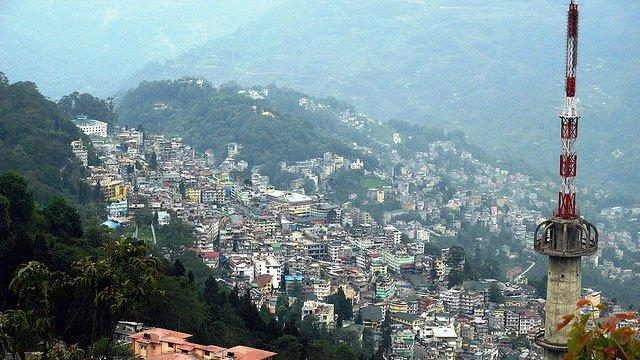
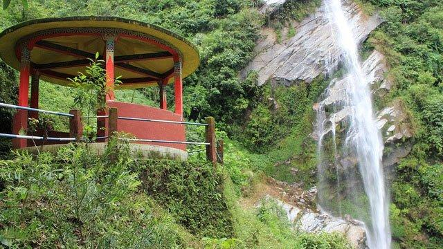
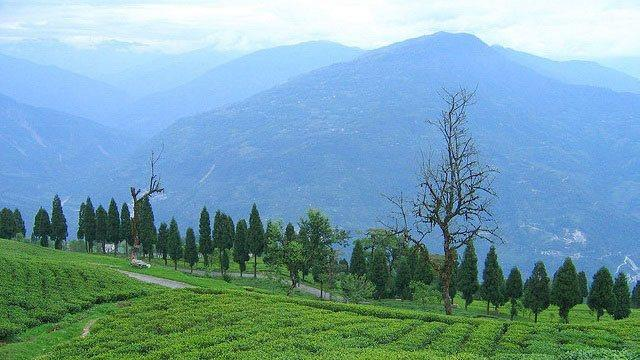
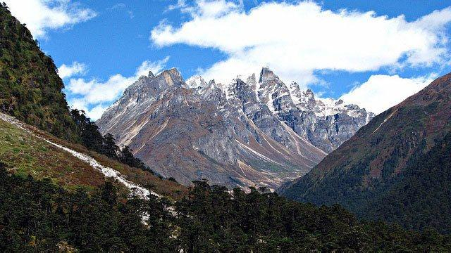
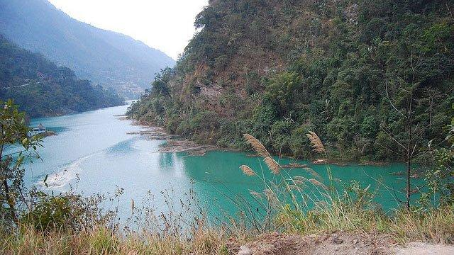
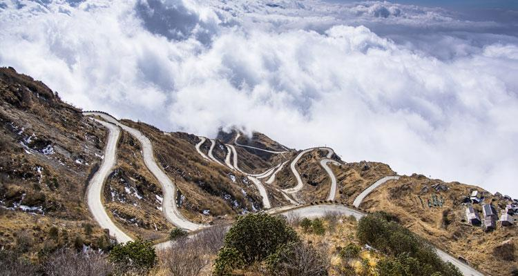
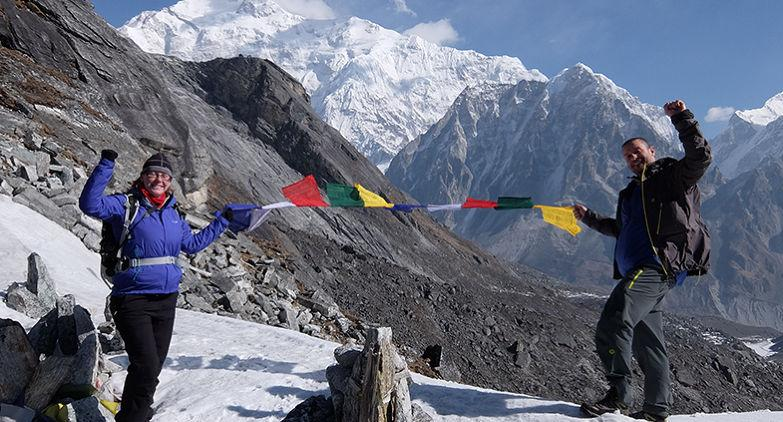
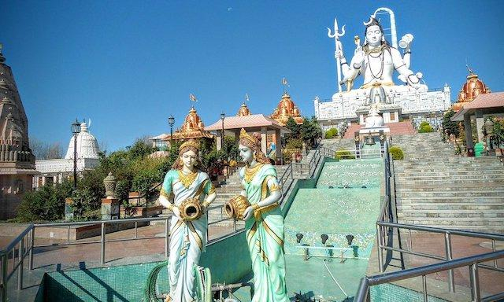
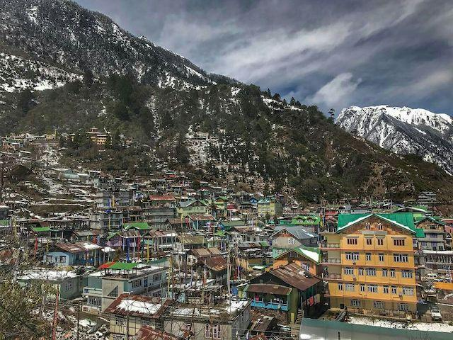
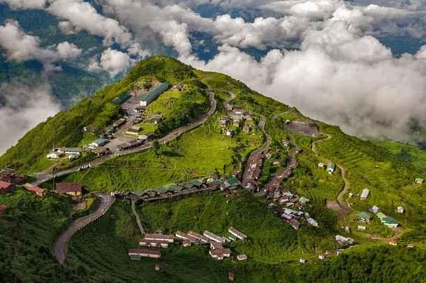

Tourist Places To Visit
Planning A Trip To Sikkim? Here's our list of top tourist places to visit in Sikkim
Tucked away in the willows of East India, this exquisite and pleasing state has been a travel destination for ages. Sikkim is a boiling pot of cultures and traditions, all set and ready to mesmerize your mind, body and soul. Its all-embracing natural beauty has the power to portray otherworldly vistas that transport your mind to blissful heights. Here are the top tourist places that you must visit while on your Sikkim tour, from Lachen to Yumthang, Gangtok to Pelling, Ravangla to Namchi.
Gangtok

A pastiche of traditional culture and modern lifestyle, Gangtok is unquestionably the capital city of Sikkim.
Shielded by the Khangchendzonga, this city offers spectacular rooftop views of Sikkim.
Gangtok is also home to multiple parks like Deer park, Himalayan Zoological Park, Ridge Park and Flower show.
Nathula Pass, Menmecho Lake and Tsomgo Lake are other star attractions.
Pelling

Pelling is a treasure of trove of trekking routes.
It is indeed a paradise on Earth with serpentine rivulets, blooming greenery and soaring mountain ranges.
Providing a panoramic view of Khangchendzonga, Pelling is a dream destination for adventure junkies and trekkers.
The breath-taking views makes Pelling worth a must visit.
Ravangla

Ravangla is a small settlement south of Sikkim.
It paints an adorable and alluring view of the mountains in the vicinity.
The playful colours soothe the senses and bring about a refreshing change in your journey.
Tourists love visiting Ravangla because of its tranquil ambience and calm and green surroundings.
Ravangla is encircled with tourist hotspots like Sikip, Temi Tea garden, Jorethang and Samdruptse hill top
where the statue of Guru Padmasambhava is stationed.
Yumthang valley

The picturesque meadows of Yumthang Valley is a treat to the human eye.
Flashing vivid hues, this valley is known for its natural beauty and scenic enchantment.
The hot springs are visited often by travellers from all over the world.
The Phodong Monastery and Kabi Longtsok are other popular attractions in the neighbourhood.
Chungthang

Chungthang is the starting point of River Teesta, famous for white water rafting.
Chungthang is bestowed with natural architecture and beauty.
This place is a hub for adventure sports.
Travellers come here to take mountaineering, and rappelling courses.
Harbouring two most renowned passes, Lachung Chu and Lachen, Chungthang is said to be blessed by
Guru Rimpoche in the days of yore.
Nathula Pass

Nathula Pass is a trekker’s paradise in Sikkim.
Located 14000 ft above sea level, this pass was widely used by traders, merchants and soldiers alike in the time of yore.
Today it is also a great tourist spot, attracting people for Sherathang, the border trade market where people can buy
Tibetan wares at cheap prices.
There is also Sikkim Point, Kulup and the View point where you literally float with the clouds.
Goechala

Another mountain pass high up in the Himalayas — Goechala is also great for trekkers and hikers.
What’s more is, you get some of the most gorgeous views of Mt. Kanchenjunga from this pass.
This is the same frame of view that is minted on the Rs. 100 note of India.
Most mountaineers who want to climb Kanchenjunga make Goechala their base camp.
Namchi

The Southern capital city of Sikkim, Namchi is also the cultural delight and capital of the state.
Its quick development in the recent decades coupled with the replica Char Dham make it a coveted tourist spot.
The eco-tourism and religious yatras are very famous here.
From temples like Shirdi Saibaba Mandir and Guru Padmasambhava statue to the Char Dham complex,
religious souls throng this place.
Other places to visit here include Namchi Rock Garden, Central Park and Baichung Stadium.
Lachen

Lachen is a beautiful snow-covered fairytale village of Sikkim, located in the northern part of the state.
Lachen is the half of Lachen-Lachung, where Lachen is the low altitude settlement and Lachung the high altitude.
The beauty of this little hamlet is unrivalled, from lakes to postcard-worthy meadows,
rhododendron forests to monasteries and mountains.
Do visit Gurudongmar Lake, Mt Pandim, Khangchendzonga and Lachung Gompa.
Yumthang Valley is also not far from here.
Zuluk

Zuluk is a special little village on the Silk Route passing through Sikkim.
It is offbeat, and not very popular on the tourist circuit, hence best for those who want to
soak in Sikkim’s beauty without all that crowd.
The winter snowfall here is to-die-for! Some of the fog around makes you wonder
if you are floating on clouds itself.
There is the Nag Temple and Thambi View Point for sightseeing, but otherwise Zuluk is best enjoyed with
a cup of coffee, sitting out in the open.